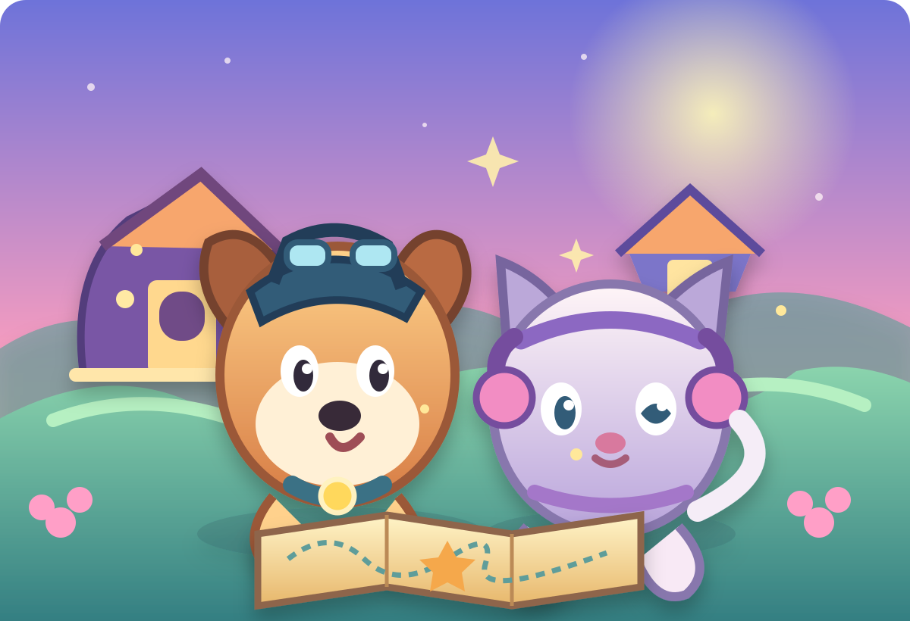

🎾 نشاط ولعب
خصص وقتًا يوميًا للمشي واللعب وألعاب الشم، مع مراعاة عمر الكلب وحالته الصحية.
دليل أصحاب الكلاب
أفكار عملية للتدريب واللعب والنظافة، تساعدك تبني روتين يناسب كلبك.
← العودة للرئيسية
خصص وقتًا يوميًا للمشي واللعب وألعاب الشم، مع مراعاة عمر الكلب وحالته الصحية.
استخدم المكافأة والتشجيع، ودرّب كلبك في جلسات قصيرة ومتكررة.
التمشيط المنتظم يساعدك تلاحظ التشابك أو التغيرات الجلدية مبكرًا.
اسأل الطبيب البيطري عن التطعيمات والوقاية المناسبة لعمر كلبك وبيئته.
خطوات عملية للتدريب الإيجابي وبناء عادات جيدة.
اقرأ الدليل ←افهم العوامل التي تؤثر في اختيار الطعام.
افتح دليل التغذية ←قائمة يومية وأسبوعية للتذكير بالمهام.
شوف القائمة ←